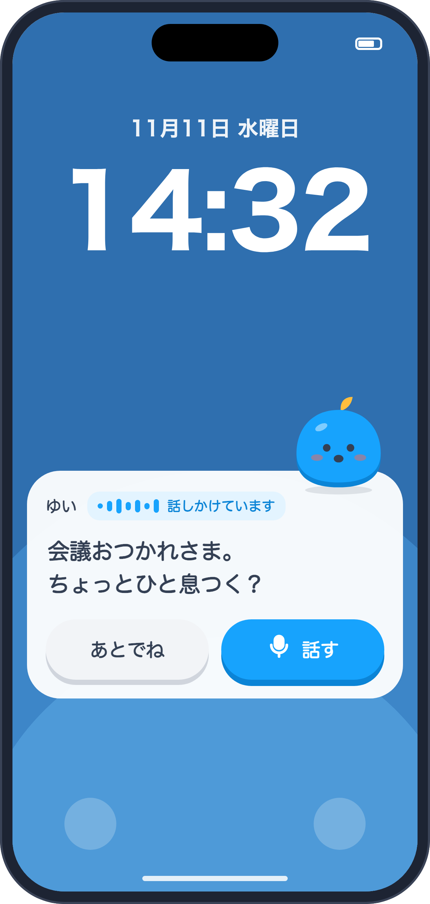
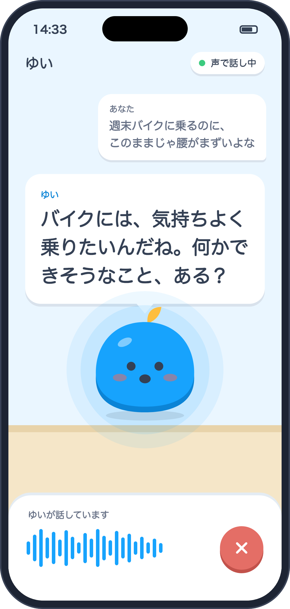
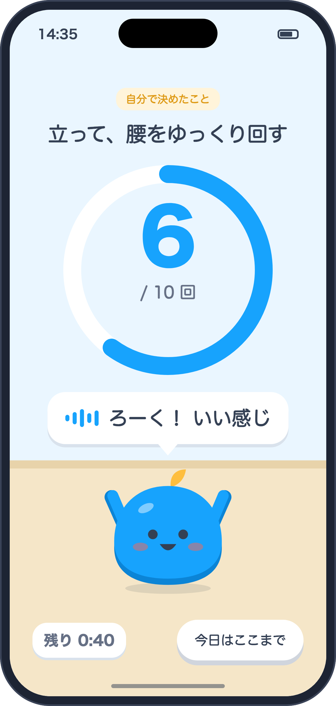

こんなこと、ありませんか
-
気づけば、一日ずっと座りっぱなし。
在宅の日は、仕事の合間もソファーから動かないまま夕方に。
-
「運動しなよ」と言われると、かえってやる気がなくなる。
心配してくれているのはわかっていても、言われるとやりたくない。
-
ジムも、着替えも、面倒。
わざわざ出かけるほどではない。でも、最近ちょっと腰が気になる。
ゆいは、そんな人のための会話アプリです。
ゆいは、運動をすすめません
ゆいがするのは、あなたの話を聞くことです。
最近の調子、やりたいこと、面倒に感じていること。
話しているうちに、「それなら、ちょっと動いておくか」と思える理由が見つかったら、その場で数分だけ、一緒に体を動かします。
使い方は、話すだけ
-
1話しかける
仕事の休憩中に、ゆいから声をかけます。文字を打つ必要はありません。
-

2話して決める
ゆいは説得しません。話しながら、やるかどうか、何をやるかをあなたが決めます。
-

3一緒に動く
決めた体操を、ゆいが数えながら一緒に。数分で終わります。
↺ 次の日も、ゆいから話しかけます。続けた日々を、一緒に振り返りましょう。
ゆいが大事にしていること
説得しない
運動をすすめたり、できなかったことを責めたりしません。
決めるのは、あなた
やるかどうか、何をやるか、どれくらいやるかは、あなたが決めます。
話した内容は、家族に伝えません
ゆいとの会話が、家族や他の人に届くことはありません。
声で、気軽に
文字を打たずに、人と話すように話せます。休憩のついでに。
ご家族の方へ
「体を動かしてほしい。でも、言いすぎると嫌がられる。」
そんなときは、ゆいのことを伝えるだけで大丈夫です。
ゆいは、家族のかわりに説得するアプリではありません。本人が自分で「やってみるか」と思えるように、話を聞く相手になります。会話の内容が家族に伝わらないので、本人も気がねなく話せます。
これから
- 2026年11月声で話せる版を、家族に試してもらう進めています
- 2026年12月一人ひとりに合った話し方ができるようにするこれから
- 2027年1月2週間使ってもらい、使い心地を確かめるこれから
- 2027年2月アプリストアでの公開を目指すこれから
進み具合は、このページでお知らせします。
よくある質問
いつから使えますか？
2027年2月の公開を目指して開発中です。公開のお知らせは、このページでお伝えします。
料金はかかりますか？
まだ決まっていません。決まり次第、このページでお知らせします。
どのスマホで使えますか？
まだ決まっていません。決まり次第、このページでお知らせします。
病気の予防や治療に使えますか？
ゆいは医療機器ではなく、病気の診断・治療・予防を目的としたものではありません。体を動かすきっかけを作るアプリです。
体調が悪いときや、痛みがあるときは？
無理をせず、休んでください。痛みや持病がある方は、体を動かす前に医師に相談してください。
話した内容はどう扱われますか？
会話の内容が、家族や他の人に伝わることはありません。保存や管理の方法は、公開までにこのページでお知らせします。
家族がアプリを入れる必要はありますか？
いいえ。使うのは本人だけです。
ご意見をお聞かせください
気になったこと、こうだったら使いたい、などを募集しています。ご意見と公開のお知らせ登録のフォームは、近日中にここに用意します。
作っている人
大浦 空Alpha+ Project 2026
身近な家族が、運動をすすめられても「面倒くさい」と動かない姿を見てきました。言われて動くのではなく、自分で「やってみるか」と思えるきっかけを作りたくて、ゆいを開発しています。